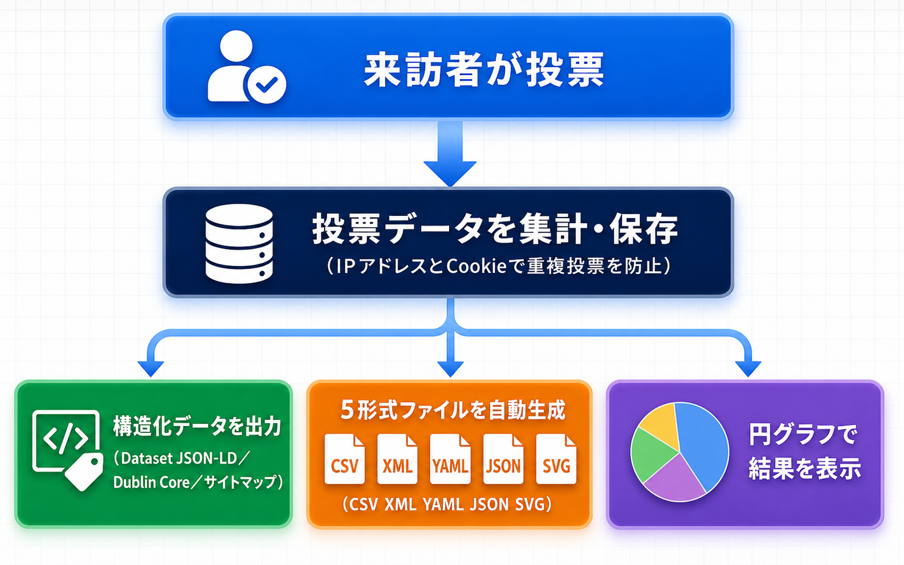

トラブルシューティング
うまく動かないときに、症状から原因と対処を探せるようにまとめました。まず下の確認順で基本的な点を確かめ、それでも直らないときは症状別の表を見てください。
まず確認すること
1
データセットは公開済みか
一覧の「日付」列が「公開済み」か確認します。下書きや非公開では記事に表示されません。
2
受付中か
一覧の「受付」列が「受付中」か確認します。「🔒 締切」なら、記事にはグラフとリンクだけが表示されます。
3
ショートコードの番号は正しいか
記事に貼った [tk_poll id="番号"] の番号が、編集画面の「ショートコード」欄と同じか確認します。
4
キャッシュを消したか
キャッシュ系のプラグイン、サーバーのキャッシュ、CDN を使っている場合は、キャッシュを削除してから確認します。
5
データファイルを一括生成したか
ダウンロードやデータセットページの表示がおかしいときは、基本設定の「メンテナンス」で「データファイルを一括生成する」を押します。
症状別の原因と対処
記事の表示
| 症状 | 原因 | 対処 |
|---|---|---|
| 「データが見つかりません。」と表示される | データセットが下書き・非公開・ゴミ箱、または番号が違う | データセットを公開する。ショートコードの番号を確認する |
| 「選択肢がありません。」と表示される | 選択肢が保存されていない | 編集画面で選択肢を入力して「更新」 |
| 何も表示されない | ショートコードの番号が空、または0 | 正しい番号を入れる |
[tk_poll id="…"] の文字がそのまま表示される | プラグインが停止している、または本文以外の場所に貼っている | プラグインを有効化する。投稿・固定ページの本文に貼る |
| 選択肢が出ず、グラフとリンクだけが表示される | 受付を締め切っている | 受付を再開する（投票の受付と締め切り） |
| グラフの部分に赤い文字で「グラフ描画に必要なライブラリ(Chart.js)が…」と出る | グラフを描く部品を読み込めない（通信の遮断、スクリプトの最適化・遅延読み込みの設定など） | 最適化系のプラグインで該当スクリプトを除外する。別のブラウザ・回線で確認する |
| 集計データを拡大ボタンと小さなグラフが無い | まだ1票も無い | 正常です。最初の投票が入ると表示されます |
投票
| 症状 | 原因 | 対処 |
|---|---|---|
| 「不正なリクエストです。（nonce）」と出て投票できない | ページがキャッシュされ、投票の確認に使う古い情報が配られている | キャッシュを削除する。投票フォームを置いたページの URL をキャッシュの対象から外す（いちばん確実です） |
| 初めての人なのに「既に投票しています」になる | 同じ回線（会社・学校・家庭）から誰かが投票済み | 1人1回の制限による正常な動作です（記事での表示と投票） |
| 最初の1人しか投票できない | CDN やプロキシの影響で、すべての来訪者が同じ接続元に見えている | サイトの設定ファイルで「プロキシを信頼する」設定を有効にする必要があります。サイトを管理している技術担当者に相談してください |
| 「選択肢が変更されました。ページを再読み込みしてから投票してください。」と出る | 選択肢を変えた後に、古い（キャッシュされた）ページから投票した | ページのキャッシュを削除する。選択肢を変えたらキャッシュも削除する |
| 「無効な選択肢です。」「この設問では1つだけ選択できます。」と出る | 選択肢や投票形式を変えた後に、古いページから投票した | ページを再読み込みしてから投票する。キャッシュを削除する |
| テスト投票した自分が、もう投票できない | 1人1回の制限 | 「集計データを全削除する」で記録ごと消す（投票の受付と締め切り） |
| 投票しても票が増えない | 受付を締め切った後に、締め切る前に開いたページから投票した | 正常です。締め切り中の投票は数えません |
管理画面
| 症状 | 原因 | 対処 |
|---|---|---|
| 投票数を書き換えたのに保存されない | 同時に選択肢も変えた、正しくない数字を入れた | 表示されたメッセージを確認し、選択肢を保存してから投票数をもう一度入力する（投票数の確認と編集） |
| 選択肢の誤字を直したら票が0になった | 文字を変えた選択肢は別の選択肢として扱われる | 「投票数」ボックスで票数を入力し直す |
| 「使用記事」「掲載中のページ」に記事が出ない | 情報を最大1時間使い回している、記事が予約投稿、または一覧の「使用記事」は公開済みの記事だけを数えるため（下書き・非公開は編集画面の「掲載中のページ」で確認できます） | 「掲載ページ情報を再取得」を押す。予約投稿は公開後に表示されます |
| 「基本設定」タブが無い | サイトの設定を変更できる権限が無い | 管理者に依頼する |
| 「公開」を押したのに下書きのまま | ほかのプラグインとの組み合わせで、押したボタンの情報が送られなかった可能性 | このプラグインには対策が入っています。続く場合は、ほかのプラグインを一時的に停止して確認する |
データセットページ・ダウンロード
| 症状 | 原因 | 対処 |
|---|---|---|
/datasets/ が表示されない（見つからない） | パーマリンク設定が「基本」、または URL の設定が古い | 「設定」→「パーマリンク」で「基本」以外を選び、「変更を保存」を押す |
| 「利用可能な形式」が出ない・形式別ページが「指定されたデータセットが見つかりません。」 | データファイルが作られていない（サーバーの書き込みの失敗、旧版からの更新直後など） | 「データファイルを一括生成する」を押す（メンテナンス） |
| 「サイトマップを書き込めませんでした。」と出る、状態が「⚠ ファイルが存在しません」 | サイトのフォルダに書き込めない | サーバーの書き込み権限をサーバー管理者に確認する |
| 一括生成で「書き込めないファイルがありました」と出る | データファイルの保存用フォルダに書き込めない | メディアのアップロード用フォルダの書き込み権限をサーバー管理者に確認する |
| ダウンロードの数字が古い | ブラウザや CDN に古いファイルが残っている | キャッシュを削除する。「データファイルを一括生成する」を押す |
しくみの全体像
原因を考えるときの参考に、投票から結果の公開までのしくみを示します。

ページキャッシュの設定について
投票の確認には、ページを開いたときに配られる一時的な情報を使います。ページがキャッシュされると、古い情報が配られ続けて「不正なリクエストです。（nonce）」の原因になります。次のどれかで対処できます。
- キャッシュプラグイン（WP-Optimize、WP Super Cache など）のキャッシュを削除する。
- サーバー側のキャッシュ（ホスティング会社の機能）をクリアする。
- CDN（Cloudflare など）のキャッシュを削除する。
- おすすめ: 投票フォームを表示しているページの URL を、キャッシュの対象から除外する。
グラフの数字はキャッシュの影響を受けません
グラフはページを開くたびに最新の集計を読み込むため、ページがキャッシュされていても最新の数字が表示されます。ただし、詳細ページの集計表と「集計時点」、「既に投票しています」や受付終了の表示はページと一緒にキャッシュされるため、古いまま表示されることがあります。